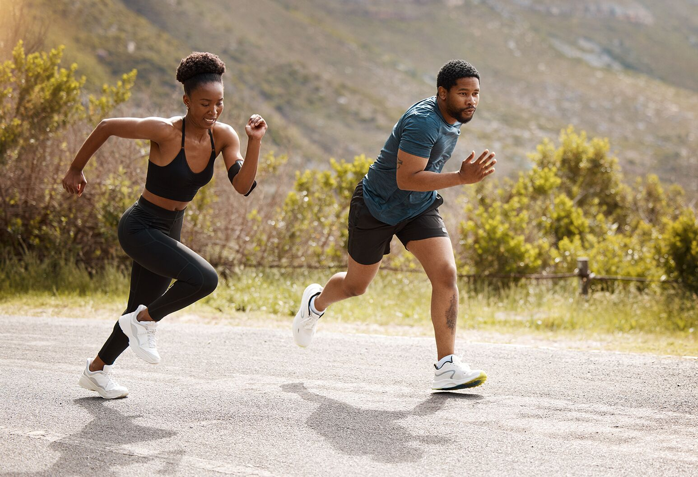
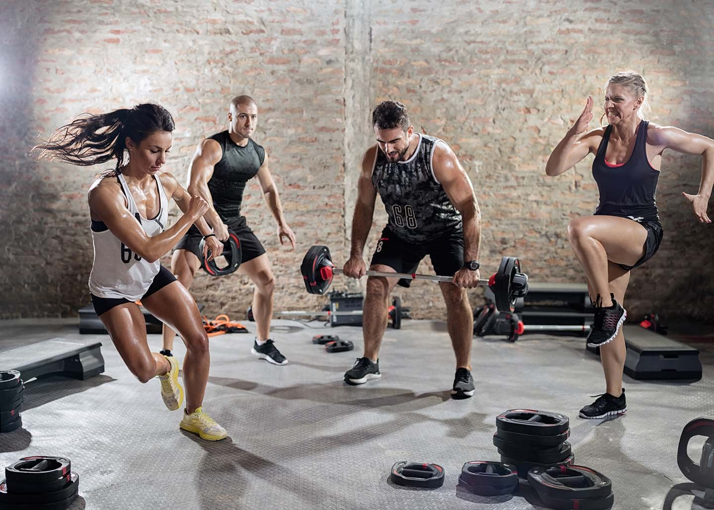
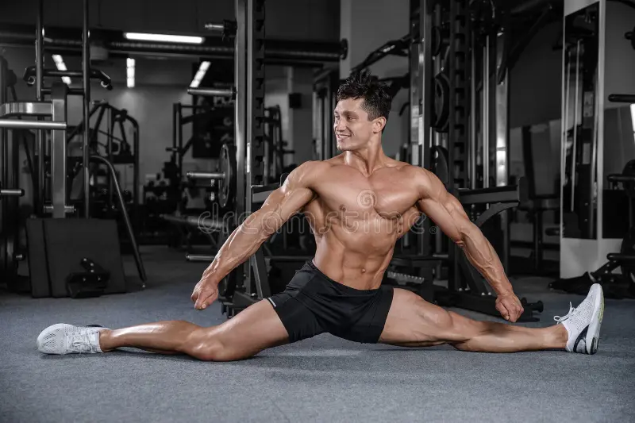

Workout Plans and Fitness Tips
Take your fitness journey to the next level! Explore powerful techniques and essential tips for strength, stamina, HIIT, stretching, and yoga.
Strength Training Tips
Build lean muscle, boost metabolism, and increase power through effective strength workouts.
- Compound Exercises: Prioritize deadlifts, squats, bench presses, and rows for full-body strength.
- Progressive Overload: Increase your weights, reps, or sets weekly to keep muscles adapting.
- Controlled Movement: Focus on slow and controlled lifts rather than rushing through reps.
- Strength Training Types: Powerlifting (heavy lifting), Bodybuilding (muscle growth), Functional Training (real-life movement improvement).

Stamina Building Tips
Enhance your endurance levels for long-lasting energy during both exercise and daily activities.
- Long-Distance Training: Incorporate running, cycling, or swimming for longer durations.
- Tempo Workouts: Maintain a steady challenging pace to train your cardiovascular system.
- Breathing Techniques: Master rhythmic breathing to optimize oxygen intake during endurance activities.
- Stamina Techniques: Zone 2 Training (easy aerobic), Fartlek Runs (speed play), Distance Building (gradual mile increase).

HIIT (High Intensity Interval Training) Tips
Quick bursts of maximum effort mixed with short recovery times for fat burn and conditioning.
- Work-to-Rest Ratio: 30 seconds intense work followed by 30-60 seconds recovery.
- Mix Movements: Combine squats, jumps, sprints, push-ups, and kettlebell swings for dynamic routines.
- Focus on Form: Maintain good technique even when tired to avoid injuries.
- HIIT Variations: Tabata (20 sec work/10 sec rest), Circuit HIIT, Sprint Intervals, AMRAP (As Many Rounds As Possible).

Stretching Tips
Improve flexibility, relieve tension, and speed up muscle recovery with proper stretching habits.
- Dynamic Before Workouts: Light movements like arm swings and leg swings to warm up muscles.
- Static After Workouts: Deep holds like hamstring or shoulder stretches to cool down and prevent stiffness.
- Balance Both Sides: Stretch both left and right sides evenly to maintain alignment.
- Stretching Styles: Dynamic Stretching (movement-based), Static Stretching (holding positions), PNF Stretching (assisted stretching).
Yoga Tips
Find balance, increase body awareness, and promote mental relaxation through yoga practices.
- Mindful Breathing: Link breath with movement to deepen stretches and improve focus.
- Master the Basics: Start with poses like Mountain, Warrior, and Tree to build foundation.
- Consistency is Key: Short daily sessions are better than occasional long ones.
- Yoga Types: Hatha Yoga (gentle basic poses), Vinyasa Yoga (flowing movements), Yin Yoga (deep stretch holds).
Apply these strategies consistently to transform your fitness journey — inside and out!